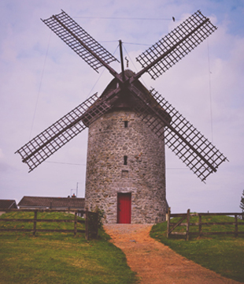
Adult Ticket
€12
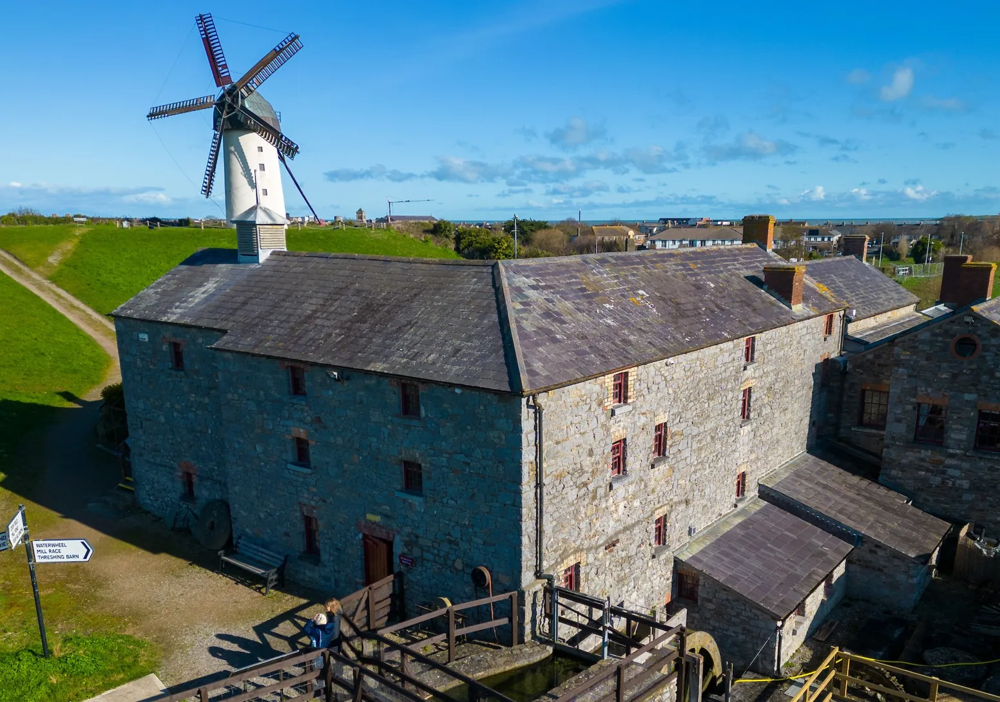
Skerries Mills is a Community Heritage Centre at the heart of Skerries on the Dublin Coastal Trail. The visitor centre hosts a traditional cafe and a craft shop, community gardens and much more. Why not join a tour of the unique heritage site.
Book Now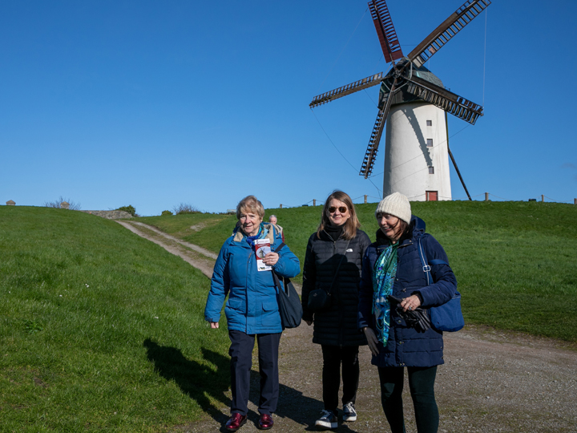
Comprising of three national monuments which are two strikingly different Sail Mills and a Watermill of the 13th century, we are Just 30 minutes north of Dublin City. Discover the vibrant Watermill Building, set amongst the Mills associated wetlands and ponds. Join our guided tour and connect with rich heritage on the only site in Europe with a collection of three Mills and a bakery.
Exciting news, works to commence on Sail Mills repairs, check out our Blog to learn more. Four of the five sails on the Great Windmill, to be replaced in stages, beginning in August 2025.

€12
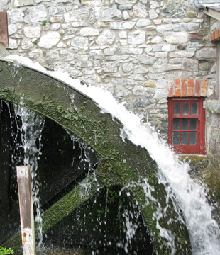
€11
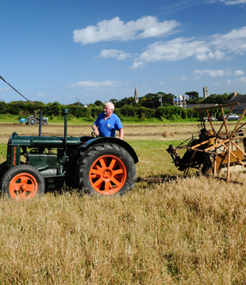
€11
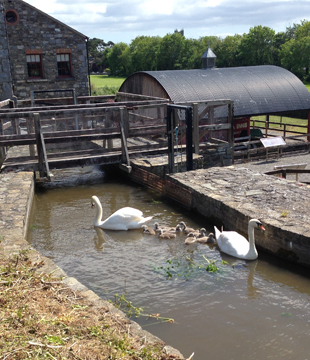
€31
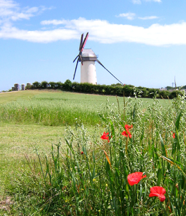
€6.50
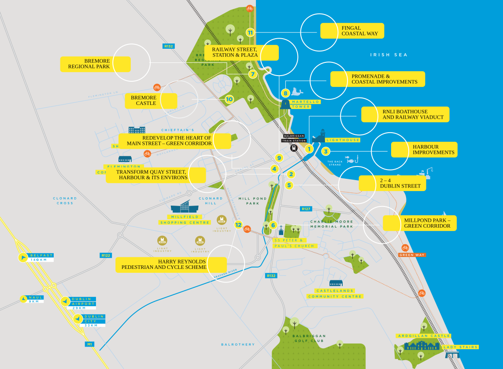
Get DirectionsSkerries Mills is operated as a not-for-profit social enterprise, each visit supports the role of the Mills in the community.
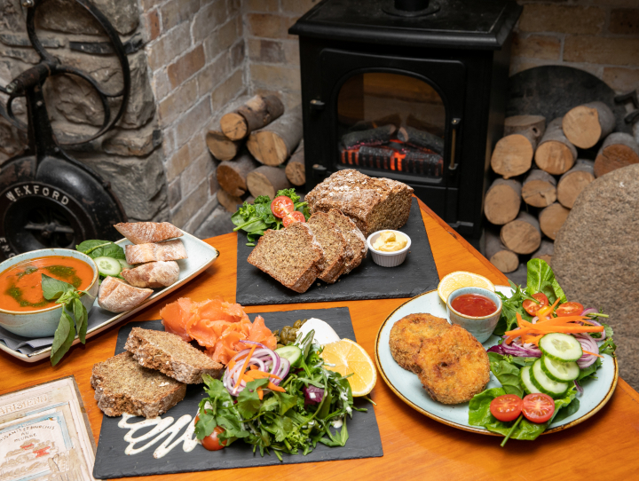
Open 7 Days
10am — 5:00pm
The Mill Bakery opened in the 1840s, we are proud to still serve delicious freshly baked goods every day. The Watermill Café is renowned for its tempting selection of scones and cakes. Tarts and traybakes are our specialty.
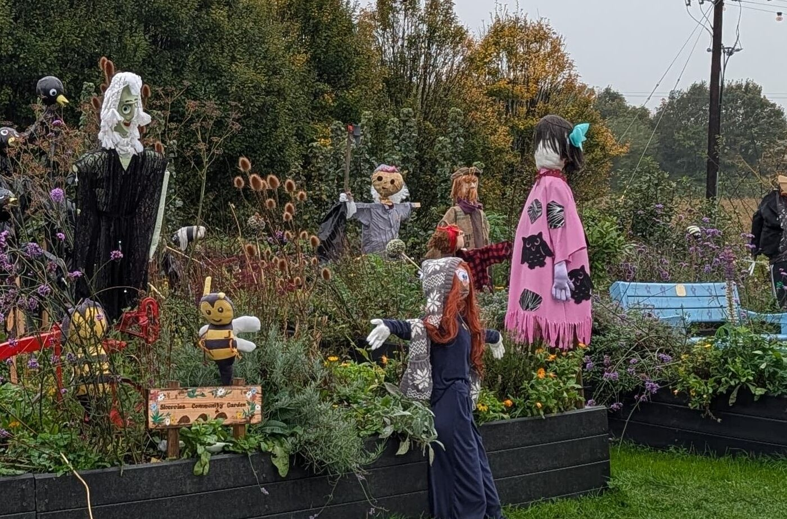
Sunday, the 18th of October 2026 Join Skerries Community Garden on...
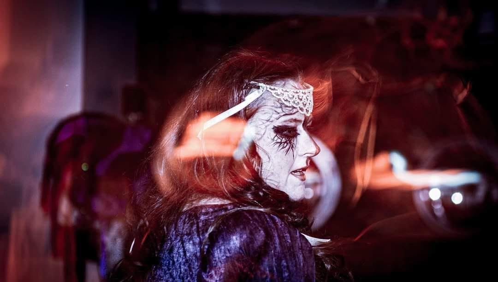
An ancient Celtic Goddess will immerse you in storytelling Visit Skerries...
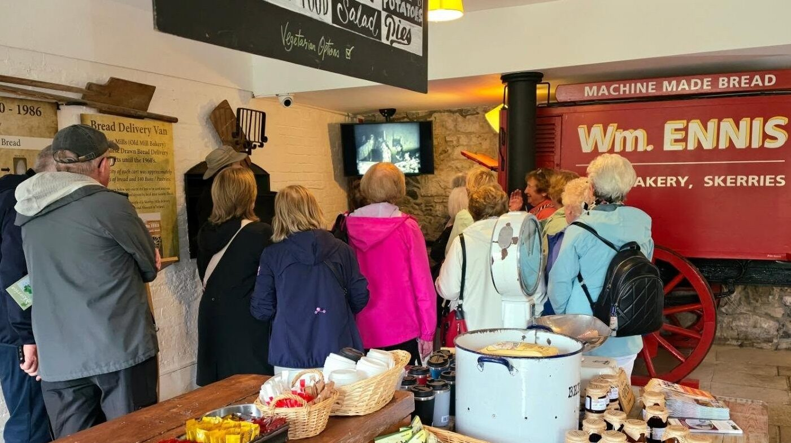
Take our tour in the Irish language Skerries Mills is a...
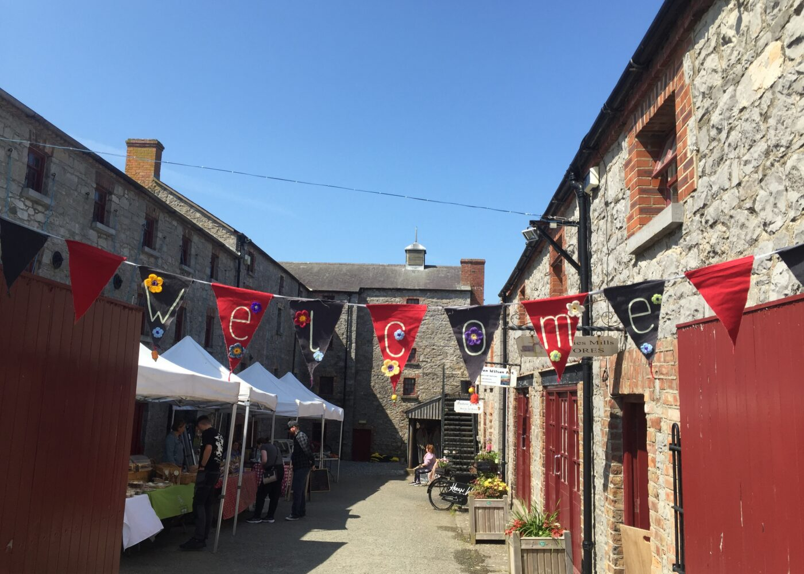
Every Saturday, through hail, rain and snow! Skerries Mills Farmers Market begins at 10 am. The market hosts farmers and crafters and runs until approximately 2 pm. You will find, eggs, cakes, usually a baker specialising in gluten-free produce, vegetables, farm to folk meats, and more.
To keep up to date follow the market on socials https://www.facebook.com/skerriesmillsmarket
A variety of craft stalls featuring handmade gifts and music retailers come to market, and a range of fresh juices are always readily available. A perfect Saturday morning stroll when bright and sunny, and welcoming your support in less favorable weather!
For more on handmade and made locally visit our Craft Shop open daily
To enquire about selling at market, it is it essential to contact the volunteers directly through messages on the Farmers Market Socials.
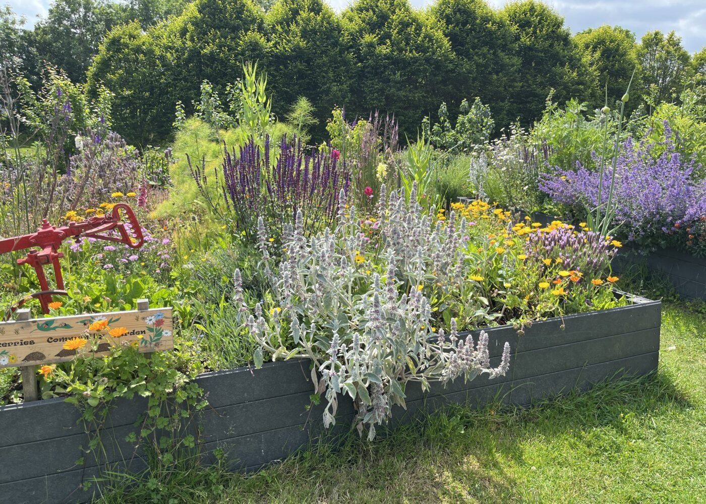
All we’ve needed to do, was stop mowing the grass and...
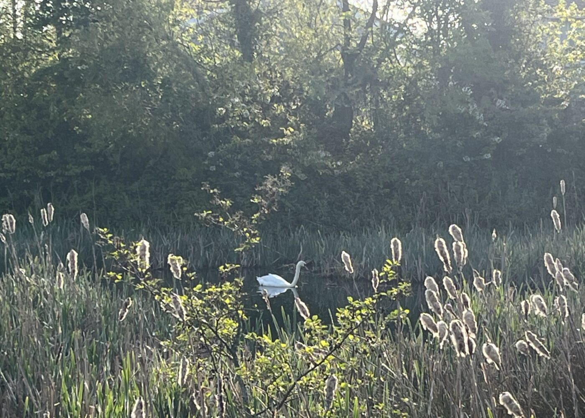
Skerries, Irelands Greenest Town Tucked along the scenic north Dublin coastline,...
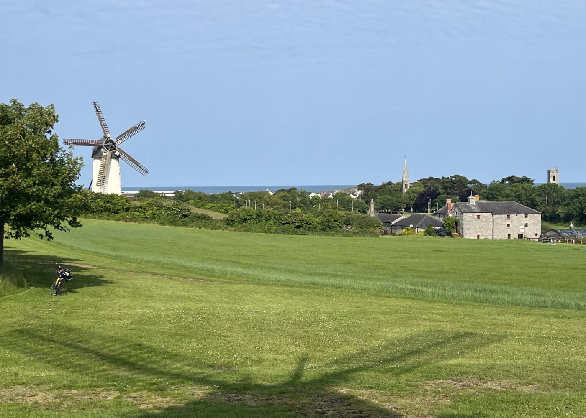
A new lifecycle begins for the 5 Sail Mill In October...